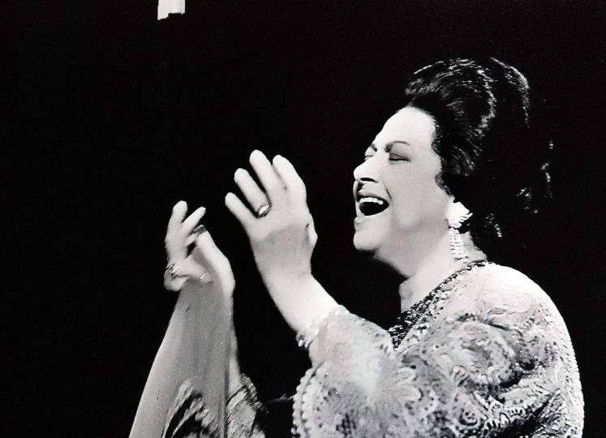

Oum-Kelthoum
About Oum-Kelthoum
Umm Kulthum was born in the village of Tamay e-Zahayra, belonging to the city of Senbellawein, Dakahlia Governorate, in the Nile Delta to a family with a religious background as her father Ibrahim El-Sayyid El-Beltagi was an imam from the Egyptian countryside, her mother was Fatmah El-Maleegi, a housewife.She learned how to sing by listening to her father teach her older brother, Khalid. From a young age, she showed exceptional singing talent. Through her father, she learned to recite the Qur'an, and she reportedly memorized the entire book. Her grandfather was also a well known reader of the Quran and she remembered how the villagers used to listen to him when he recited the Qu'ran.When she was 12 years old, having noticed her strength in singing, her father asked her to join the family ensemble, upon which she joined as a supporting voice, at the beginning just repeating what the others sang.
work section
Professional career
Amin El Mahdi invited her into the cultural circles in Cairo. In 1924, she was introduced to the poet Ahmed Rami, who was to write 137 songs for her and also introduced her to French literature eventually becoming her head mentor in Arabic literature and literary analysis. In 1926, she left Odeon records for Gramophone records who would pay her about double per record and even an additional $10,000 salary. She also maintained a tightly managed public image, which undoubtedly added to her allure. Furthermore, she was introduced to the renowned oud virtuoso and composer Mohamed El Qasabgi, who introduced her to the Arabic Theatre Palace, where she would experience her first real public success. Other musicians who influenced her musical performances at the time were Dawwod Hosni or Abu al-Ila Muhammad [fr].Al-Ila Muhammad instructed her in the control over her voice, and variants of the Arabic Muwashshah.By 1930, she was so well known to the public, that she was the example to follow for several young female singers. In 1932, she embarked upon a major tour of the Middle East and North Africa, performing in prominent Arab capital cities such as Damascus, Baghdad, Beirut, Rabat, Tunis, and finally Tripoli.
resume section
Notable songs
| title | years | lyricist |
|---|---|---|
| Ghaneely Shwaya Shwaya | 1944 | Bayram al-Tunisi |
| Seeret Hob | 1964 | Morsi Gamil Aziz |
| Lasto Fakir | 1972 | Abdel Fattah Mustafa |